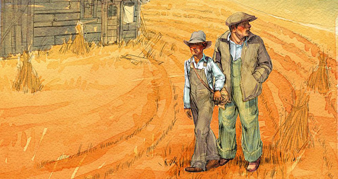

Summary:
A controversial tale of friendship and tragedy during the Great Depression
They are an unlikely pair: George is "small and quick and dark of face"; Lennie, a man of tremendous size, has the mind of a young child. Yet they have formed a "family," clinging together in the face of loneliness and alienation.

Laborers in California's dusty vegetable fields, they hustle work when they can, living a hand-to-mouth existence. For George and Lennie have a plan: to own an acre of land and a shack they can call their own. When they land jobs on a ranch in the Salinas Valley, the fulfillment of their dream seems to be within their grasp. But even George cannot guard Lennie from the provocations of a flirtatious woman, nor predict the consequences of Lennie's unswerving obedience to the things George taught him.
"A thriller, a gripping tale . . . that you will not set down until it is finished. Steinbeck has touched the quick." —The New York Times
(Visit Amazon.ca)

 Of Mice and Men
Of Mice and Men